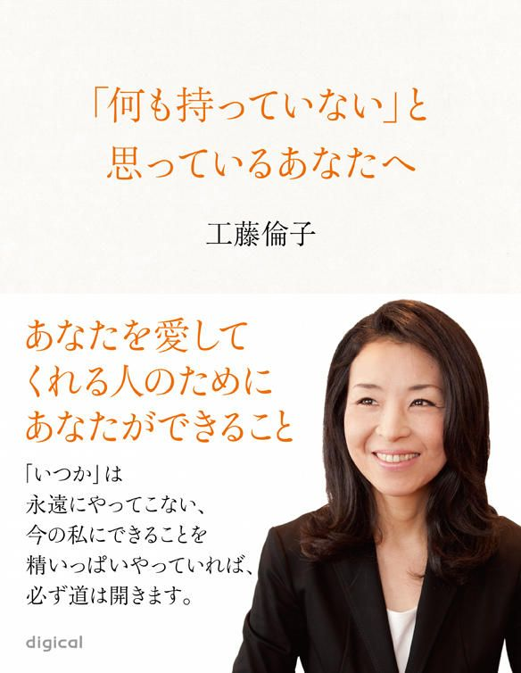
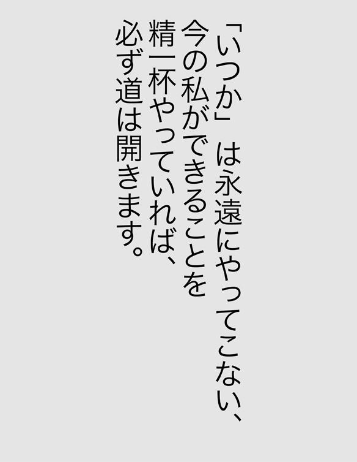

| 「何も持っていない」と思っているあなたへ ～あなたを愛してくれる人のためにあなたができること (impress QuickBooks) | |
| 工藤倫子 | |
| (2012) | |


【プロフィール】

キャリアカウンセラー 工藤 倫子
（くどう りんこ）
ＣＤＡ（Career Development Adviser）、ＪＣＤＡ認定ＣＤＡインストラクター、産業カウンセラー、教育カウンセラー。
１９９３年大手化粧品メーカー入社。営業部門のとりまとめをする傍ら人材育成業務に従事。その後長女・長男出産。
３年間の育児休業の期間を経て２００４年人材教育会社入社。キャリアカウンセラーとして「ジョブカフェあおもり」の設立に参画。主に若年者を対象とした就職支援事業に携わる。２０１０年に独立し、教育現場（子ども、教職員、ＰＴＡ、教育行政機関など）を対象としたキャリア開発支援事業を精力的に展開。併せて、女性活躍推進事業、キャリアカウンセラーの養成を全国で手掛ける。２０１２年 青森県総合計画審議会委員に就任。
新聞でのコラム連載、海外の教育機関での講演など活動の幅を広げている。「子ども達に夢を！」をテーマに、これまで関わった若年者は４３、０００人を越える。
キャリアに関するセミナー・講演実績は１０００回以上。「自分を信じること」をテーマにした講演が人気を呼んでいる。
Office Rinko ホームページ http://rinko-kudo.jp/
▼ はじめに
今から８年前、私は専業主婦でした。下の子が生まれたばかりで、家事と育児に追われる毎日。愛読書は「素敵な奥さん」（主婦と生活社）、毎朝欠かさず「はなまるカフェ」を見て、節約料理に励み、ジーンズをリメイクして、子どもの通園バックを作ったり、小物を作るのが趣味でした。
そんな私がある日突然、働かなければならない状況に陥り、仕事を探しました。再就職するのはまだずっと先だと思っていた私は、当時運転免許しか持っておらず、パソコンスキルも全くと言っていいほど持ち合わせていませんでした。そんな私を拾ってくれた会社があり、私はたまたま「キャリアカウンセラー」という仕事に就くことになりました。
４歳と７か月。２人の子どもの子育てをしながら、全くの未経験の分野の仕事に足を踏み入れました。当時34
歳でした。６年間無我夢中で「キャリアカウンセラー」として働いた私は、またある日突然、「上京してフリーでキャリアカウンセラーとして活動する」ことを決心します。青森で生まれ育った私は、県外で暮らしたことはほとんどありません。そんな私が40
歳にして、子ども達と両親を連れて上京してきました。東京には知り合いらしい知り合いは４、５人程しかいませんでした。もちろん人脈も仕事もお金もパートナーも学歴も......何も持っていませんでした。
そして、上京してきてから２年後の２０１２年２月27
日。私は海外で講演をしていました。たった８年で、専業主婦だった私が海外で講演をするまでになったのです。
この８年間、何度か死んでしまいたいと思うこともありました。
孤独に耐えられず、夜中に大声で泣き、子ども達にびっくりされたことも一度や二度ではありません。しかしその度に人に助けられたり、本の中の言葉に救われたりしながら、立ち上がり、前だけを見て歩いて来ました。
私がたくさんの人や本から助けられたように、私の言葉でホンの少しでも、勇気を持って前に進んでくれる人がいたら......と思いこの本を書きました。
何も持っていないと思っているあなたへ。
あなたにはたくさんの才能があります。それに気づかないまま生きるのか、才能という名のキレイな花を咲かせるかは、あなたの考え方一つで決まります。あなたが今、何歳かは関係ありません。
もうひと花もふた花も咲かせてみませんか？
第１章
自分には何もないと感じる時
▼
何もない、何も持っていないから何にでもなれる～自分の中の種を見つける～
▼
「知らない」からできることもある～後から学んだっていい～
▼
「失った」のではなく「卒業した」と考える～最高のタイミングで次へ進む～
第２章
がんばってもがんばっても満たされないと感じる時
▼
助けてくれる人には甘えてかまわない～ペイ・フォワード、Give＆Giveの精神で～
▼
涙が出るのは、真剣だから～困難が生じるのは順調なしるし～
▼
「このままでいいの？」と「先が見えない」～不安はどこからくる？～ ～「今」を生き切る～
第３章
どうしても自分に自信が持てない時
▼
全ての女性はキャリアウーマン！～一人ひとりがスペシャルなキャリアの持ち主～
▼
「何もできない」は驕り～あなたは必ず誰かの役に立っている～
▼
あなたを信じてくれる人のために～あなたのがんばりをいつも見ている人がいる～
第４章
明日に希望を見いだせない時（孤独で寂しいと感じる時）
▼
あなたはひとりぼっちではない～孤独との向き合い方～
▼
「どうでもいいこと」に時間を使わない～大切なことにだけ目を向ける～
▼
残るのは「目に見えないもの」だけ～裸になった時、あなたには何が残る？～
第５章
やりたいことが見つからない時
第６章
新しいことに一歩踏み出せない時
第１章 自分には何もないと感じる時
▼
何もない、何も持っていないから何にでもなれる～自分の中の種を見つける～
〝はじめに〟に書いた様に、今から８年前の私は、４年半の専業主婦のブランクがあり、何の資格も持っていない地方在住の主婦でした。再就職をしなければならない状況になった時、何の取り柄もない私にいったい何ができるのだろう？ と必死に考えました。でも、いくら必死に考えても自分の身近にある仕事しか思い浮かびません。まずはホームヘルパーの通信講座に申込みをしました。ホームヘルパーとして働きながら勉強して、社会福祉士、ケアマネージャーの資格を取ろうと思っていました。正社員で働くのは難しいだろうと思った私が、頭の中に描いた働き方は、
朝......近所の病院のお掃除
昼......ホームヘルパー
夜......銭湯のお掃除
土日......スーパーの試食
というものです。
ちなみにこれは全て私の友人、知人がやっていたアルバイトです。これを全部組み合わせたら、何とかなるんじゃないかと思っていました。私はその時、何も持っていなかったので、何の仕事でも良かったのです。ホームヘルパーの資格を取るまでの間も何かしなければなりません。毎日ハローワークやインターネットで仕事を探していました。
そんなある日、何やらおもしろそうな仕事を見つけました。「キャリアカウンセラー及びセミナー講師募集」キャリアカウンセラーという言葉を初めて聞いた私は、後半の「セミナー講師募集」の部分に惹かれたのです。前職は営業でしたが、月に一度位は社内でセミナーをやっていたので、その経験が生きるかもしれないと思いました。本当にありがたいことに、その求人を出していた会社で契約社員として働くことが決まりました。
これが私と「キャリアカウンセラー」という仕事の出合いです。もちろん、その他にもたくさん面接は受けていました。販売、営業、業務委託の仕事......。私にやらせてもらえることがあれば本当に何でも良かったのです。ですから、迷うことなく最初に決まったこの仕事に就きました。
私は今、中学生から60
代の人まで、たくさんの人にセミナーや講演、キャリアカウンセリングをしていますが、「やりたいことが分からない」「自分が何に向いているのか分からない」もしくは「これをやりたいのですが、自信がありません」という人が多いのです。やりたいことが見つからなければ、就職できない......という風潮はどうなのかなと思います。自分に何が向いているのか分からないということは、今やっている仕事が適職なのかもしれません。学生であれば、何が向いているかなんてやってみなければ分からないのですから、「絶対イヤ」なこと以外はやってみたらいいと思います。「自信」に関しては、「ここまでやったから大丈夫」なんていつまで経っても思えないものです。
何の資格もない、何の取り柄もないということは、逆に今から「何にでもチャレンジできる。」「何にでもなれる。」とも考えられるのです。中途半端な知識や経験があるばかりに、「あれはできる」「あれはできない」と勝手に決めつけてしまい判断を鈍らせてしまうことになりかねません。「何も持っていない」ということはむしろこれから「どんな花を咲かせようかな」と種を選ぶところからできるのです。そう思うとワクワクしてきませんか？ あなたはいつどんな花を咲かせたいですか？ あなたの中にもキレイな花を咲かせる種があるのです。
▼
「知らない」からできることもある～後から学んだっていい～
こうして無事に仕事に就くことができましたが、私が就職した場所はできたばかりの若年者就職支援センターだったので、誰もその場所も「キャリアカウンセリング」という言葉も知りません。私も「キャリアカウンセリング」というものがいったい何なのか、研修を受講した後もよく分からないままでした。そんな状態ですから、利用者は誰もいません。くるのは関係者の見学ばかり。毎日何もすることがないので、県内の学校に営業に行こうと思いたち、早速資料作りから始めました。本当は「キャリアカウンセリング」とはいったい何なのか？ 「キャリア教育」とは何なのか？ もよく分かりませんでしたが、前職が営業だったので、営業用の資料一式をクリアブックに揃えるのは何てことはありません。久しぶりの営業ということもありワクワクしました。「若年者の就職を支援する施設ができました」「こんなカリキュラムをご用意しました」センターのチラシを配ったり、自分で会社の資料をアレンジして、学校向けのセミナープランを作成して持って行ったりしました。
そんな私を見て「ここはカウンセリングをする場所だ。あなたみたいに数字ばかりを追う営業体質の人には向かないんじゃないか？」と言う人もいました。それもそのはず。一緒に入社したメンバーは、元教員、人事部長、経営者、カウンセラーの有資格者等々、皆さん素晴らしい経歴の持ち主でした。私だけが元専業主婦、その前は営業......と場違いもいいところでした。その時、その人に言われた一言はただでさえコンプレックスの塊だった私の胸にぐさりと突き刺さりました。ですが、この一言があったおかげで、「それでも私には営業しかできない」「ううん。何も役に立たないなら、皆さんのための仕事を取ってこよう！」と気持ちを切り替え、営業に徹することができました。そしてその悔しさをバネに猛勉強しました。
その後、ポツリ、ポツリと私が営業した学校から、「出前授業」に対する申込みのＦＡＸが届くようになりました。「やったー!!
」仕事が取れた喜びに浸っていられたのは一瞬でした。さて......高校生にどんな授業をしたらいいのだろう？ 上司に相談すると「自分で考えろ」の一言。必死に調べたり、勉強したりの毎日でした。何とかでき上がったレジュメを持って学校へ授業をしに行く。そして、また考えて作って行く......。このくり返しでした。
今思うと、学校のことも教育のことも何も知らなかったからこんな大胆なことができたのだと思います。そしてまた、知らなかったから必死に調べて勉強して、「先入観」や「固定概念」というものを持たずに済んだのだと思います。結局はそれが学校にとっては新鮮だったのです。私は「アウトプット」する場ありきで勉強したので、最も効率のいい勉強ができたのです。これが「まず最初に学んでから」と思ったら、今でもできていなかったでしょう。学ぶことは尽きません。そして、学べば学ぶほど自分の知識のなさ、至らなさが恥ずかしくなり、「もっと学んでからでないとできない」と思ってしまいがちです。「ここまでやったから大丈夫」と思える臨界点の様なものはないと思います。そして、「最初に勉強ありき」では、実際に使う場面がないので、すぐに忘れてしまいますし、さび付いていきます。やりながら考え、学んでいったほうがずっと効率がよく、しかもしっかりと身につくのです。現代の様なスピードの中で仕事をしていくにはやりながら勉強するほうがいいのです。ここでもまた、何も持っていない人のほうが新しいことを実行したり、勉強する上でも吸収がいいのではないか、と私は思っています。
▼
「失った」のではなく「卒業した」と考える～最高のタイミングで次へ進む～
私は２人目の子どもが７か月の時から働き始めます。働かなければならない状況になったのは、この子が生まれてすぐのことでした。当時、家を新築したばかりで、２人目の子が生まれ、私は人生で最も幸せな時期を過ごしているはずでした。ところが、全く逆で、私は生きる希望を失っていました。生まれたばかりの我が子を胸に抱き、「この子はいったい何のために生まれてきたのだろう。」と我が子が不憫で仕方がありませんでした。授乳をしながらも涙が止まりません。この先、２人の子どもを抱えて、どうやって生きていったらいいのか......途方に暮れていました。ですが、泣いてばかりもいられません。何としてでもこの子達を育てていかなければと仕事と家を探し始めたのです。
私はその時住んでいた家を建てる時、前職の退職金を頭金にしていました。何もかも失ってしまうことになりますが、思い出の詰まった家に住み続けるのも、そこで使った家具を使い続けるのも嫌だったので、ほとんど何も持たずに家を出ました。子ども達と私の３人暮らしのスタートは小さなアパートからでした。小さなテレビと小さな冷蔵庫と洗濯機を購入し、ひっそりと新しい生活をスタートさせました。
会社では慣れない仕事で、覚えなければならないことが山の様にあります。下の子は保育園に慣れるまで、しょっちゅう熱を出し、保育園から呼び出しが続きました。「どうして私がこんな目に合わなければいけないんだろう」この先の不安と寂しさに加えて、小さな子ども２人抱えてのハードな仕事......。心身共にクタクタでした。会社に行っても、スーパーに買い物に行っても、保育園や学校の行事に行っても、自分だけが惨めに感じてしまっていました。夜、子ども達を寝かしつけると、自然に涙があふれました。毎晩、毎晩......。本当に枕がびしょ濡れになる位に......。時々、あまりにも大きな声で泣いてしまって、子ども達が驚いて起きることもありました。そんな生活が２年ほど続いたと思います。
そんな生活をしていた時、会社の取引先の営業の人に「倫子さんはいつも幸せそうですね」と言われました。私は驚いて、一瞬言葉に詰まりました。「私、幸せそうに見えますか？」「はい。幸せでしょう？」と言われ、また涙が溢れそうになりましたが、周囲にはそんな風に見えていたんだ。と初めて自分を誇らしく思えました。それまで私は、社会人としても妻としても母としても女としても娘としても失格で、本当に消えてしまいたいとさえ思っていました。ですが、会社にいる時だけは、いつも笑っていました。仕事の内容は大変でしたが、職場は楽しかったということもあり、笑っていられたのです。いい上司にも恵まれていました。その時、どんなに辛くても幸せそうに見える女を演じようと心に決めました。 また、ある時、この業界の大先輩である女性に「倫子さん、４－１と考えてはいけませんよ。１＋２と考えるのです。」と言われて、「そうだ。私は欠けているところにばかり目が向いていたんだ」と気づくことになります。何もかも失ってしまったと思っていましたが、その人のその言葉や苦しい時に読んでいた本の言葉から「私は２人の素晴らしい子どもを授かり、このギフトを受け取ったタイミングで、彼からは卒業することになっていたんだ」と思うことにしました。そして、このタイミングで偶然出会った「キャリアカウンセラー」という仕事が私にとって、天職なのだろうとも思うことにしました。実際、私がこの仕事に就いたのは、国の予算で全国に「若年者就職支援センター」ができた時でした。通称「ジョブカフェ」の立ち上げスタッフとして就職できたことは、本当にラッキーでした。私は最高のタイミングでそれまでの生活を卒業し、次へのステージを踏み出したと言えるのです。もちろん泣いてばかりいた２年間の間には、そんな風には全く考えられませんでした。
もしも今、「どうして私ばかりが......」「何もかも失ってしまった」と苦しんでいる人がいたら、今は辛いかもしれませんが、この状況は何らかの意味があって、その場所から、その人から、そのモノから卒業する時なのです。例えそれが悲しい別れだとしても、それは卒業する時期が来たということです。新しいステージにどうぞ進んで下さい。今が最高のタイミングなのです。
第２章 がんばってもがんばっても満たされないと感じる時
▼
助けてくれる人には甘えてかまわない～ペイ・フォワード、Give＆Giveの精神で～
私は上の子が生まれた時、１年半の育児休暇取得した後職場復帰をしましたが、仕事と家庭の両立ができず、復帰後たった４か月で会社を辞めてしまいます。最後は救急車で運ばれて、そのまま２週間入院するといった有様でした。なぜそんなことになってしまったかというと、私が誰にも甘えられず、八方塞がりになってしまったからです。会社でも家でも実家でも保育園でもいつも「すみません」とあやまってばかりいました。「私は仕事をしたいだけなのに、どうしてこんなに毎日あやまってばかりいるんだろう。」そう思うと悲しくてたまりませんでした。当時、私の母は体調が悪く、小さな子供を見られる状態ではありませんでした。何もかも一人でやらなければと感じ、しかも家の中のこともキチンとしなければ気が済みませんでした。会社の人に仕事のことをお願いするのも、友人に子どものことをお願いするのも、申し訳ないと感じ、全て一人で抱えていました。
この仕事に再就職をした時にはそうは言っていられませんでした。どんなことがあっても働かなければならないので、ありとあらゆる手段を使わざるを得なかったのです。子どもが熱を出せば、日替わりで友人に見てもらいました。それどころか、入院した時には、時間単位で交代して見てもらったこともあります。どうしても仕事が休めず、病院に連れていってもらったこともあります。私が出張の時には保育園に迎えに行ってもらい、泊めてもらったこともあります。
この時お世話になった友人たちには本当にいくら感謝してもしきれません。彼女達がいなかったら、絶対に仕事を続けることはできませんでした。その時、友人達が口々に言ったのは「お互いさまだから」という言葉でした。「お互いさまだから、いいんだよ。倫子ちゃんができる時に誰かにやってあげればいいのよ。それに、倫子ちゃんはその分働けばいいんだよ」と言ってくれました。本当に涙が出ました。あんなに人の優しさが心に染みたことはありません。
私は子育てを通じて、「お互いさま」の精神を学びました。そこには「ＧＩＶＥ＆ＴＡＫＥ」の精神はないのです。「見てあげたから、今度は見てもらう。」ではなく、「私はいいから、やれる時に誰かにやてってあげて」の精神なのです。皆さんは「ペイ・フォワード」という映画をご存じでしょうか？ 何かいいことをしてもらったら、いいことに出会ったら、しれくれた人に返すのではなく、他の人にお返しする。そうすれば世の中はうんとよくなる。という考え方を子どもが広めようとした映画です。私の友人達は、まさにこの考え方を持つ素晴らしい女性達でした。私の友人だけでなく、「ママ友」の間では、この精神を持っていて、引き継がれていることが多いと感じています。お母さんたちは、自分の子どもの成長だけでなく、地域や、今後の日本がよくなっていくことを願っています。「お母さんってすごい！」と思うことばかりでした。子育てをしなければ、きっとこんな気持ちにはなれなかったと思います。それまでの私は「誰にも頼らずに生きていける」なんて傲慢なことを思っていましたから......。
がんばってもがんばっても成果が出ない。認めてもらえない。満たされない。と感じる時は、がんばる方向が間違っているのかもしれません。がんばることは大切ですが、一人でがんばる必要はないのです。誰かを頼っていいのです。「助けて」って声を出していいのです。あなたが本当にがんばっているのなら、そこに手を貸してくれる人はいるはずです。躊躇せず、その手を握って下さい。今は恩返しができなくても、その恩を忘れずに、あなたができる時にできるやり方で、誰かに返していけばいいのです。子どもは宝です。そして、お母さんもまた宝です。どうか「子どもがいるからできない」なんて思わないで。子どもがいるからこそ、できることは広がっていくのです。
▼
涙が出るのは、真剣だから～困難が生じるのは順調なしるし～
運良く「キャリアカウンセラー」という仕事に就くことができた私ですが、全く何の知識もないままにこの仕事に就いてしまったので、勉強、勉強の毎日でした。
まずは「キャリアカウンセラー」の資格を取ることからスタート。ところが、それまでの４年半は専業主婦として子育てと家事に追われる毎日で、全く勉強というものをしていなかったので、テキストを読み始めても全く内容が分かりません。下の子がまだ１歳にもなっていないうちに保育園に預けたので、当時は夜泣きもひどく、毎日睡眠不足で、フラフラでした。勉強から遠ざかっていたことと、睡眠不足の状態でテキストを開いても、字面を追うのもやっと。というよりも、何度も同じページをなぞっているばかりで、そこに書いてある内容を全く理解できません。
しかも、当時は東北ではキャリアカウンセラーの養成講座は仙台でしか開催されていなかったので、土日は仙台まで通わなければなりませんでした。青森―仙台間は約４００キロ。勉強時間とお金を確保するにも一苦労。目の前にある仕事にも追われていました。そんな中、何度も子どもは熱を出し、挙句の果てに上の子は胃腸炎で、下の子は肺炎で入院するという事態もありました。昼間は母や友人に病院に付き添ってもらい、夜は私が泊まり、病院から仕事へ行くという日が何日も続きました。消灯時間が過ぎても子どもは泣きやまず、おんぶしたまま点滴をつないだカートを引っ張り、夜通し病院内を歩いたりもしました。病院のベッドの上でテキストを開き、お昼休みにテキストを開き......。「どうしてこんなに辛いことばかりが続くのだろう」「人生は何て不公平なんだろう」と涙が出ました。
そんな時に支えになってくれたのは、やはり両親や友人、そして会社の上司や同僚でした。周囲に応援してくれる人がいて、せっかく就いた仕事でがんばっているというのに、ここであきらめる訳にはいかないと、必死で勉強しました。その時、無理をして資格を取らなくても、別に仕事ができなくなるわけではありませんでしたが、自分に自信がなかった私は、どうしても資格が欲しいと思いました。
今振り返ってみると、「もっとがんばりたい、自信をつけたい」と必死に前に進もうとしていたから、涙も出たのだと思えるのです。あの時「後でいいや」とそこに留まっていたら、今の私はなかったと思います。
もし、今、困難なことにぶつかっているとしたら、あなたの人生は順調に進んでいる証拠です。あなたが前に進もうとしているからこそ、困難が立ちはだかり、そこを乗り越えようとしているから涙も出るのです。
よく「人生に無駄なことなど何一つない」と言いますが、本当にその通りだと思います。あなたの今のがんばりは、将来意外な形で花開くことになるはずです。焦らず、腐らず、前を向いて歩いて下さい。その歩みがゆっくりでも、停滞していると感じても、後で振り返ると、そこでの踏ん張りがあったから今の私があると思える日が来ます。「何も咲かない寒い日は下へ下へと根を伸ばせ。いつかキレイな花が咲く」マラソンの金メダリストの高橋尚子さんが好んで使っていた言葉です。あなたの花はどんな花なのか、楽しみに待ちましょう。
▼
「このままでいいの？」と「先が見えない」～不安はどこから来る？～ ～「今」を生き切る～
こうして、無我夢中で仕事をして、気づくと５年が経っていました。その頃私は、中学校や高校で年間１００本以上のセミナーをするようになっていました。その実績が買われて、県の教育庁や高校の進路指導部長からの依頼を受けて、教員や保護者対象のセミナーをする様になっていました。
右も左も分からない状態でこの世界に入り、最初の３年程は、訳がわからないまま次々と依頼される仕事をこなす毎日でしたが、とてもやりがいがありました。自分の成長が実感できて、仕事にはとても誇りを感じていました。しかし、この頃から、何か仕事に対して停滞感の様なものを感じるようになっていました。私の仕事は「県」からの委託を受けて実施している事業でしたので、私の仕事は全て「無料」でした。その「無料」の壁にぶち当たっていたのです。
学校で講演をする時は、毎回同じ話をしていても相手が変われば、反応もまるで違います。同じテーマでも、毎回改良をし、その地域や学校の特性に合わせて、自分なりにひとつひとつ丁寧に仕事をやっているつもりでした。その姿勢を評価してもらい「是非工藤さんにお願いしたい」と声がかかる一方で、学校行事として定着してしまい、先生が異動で変わってしまうと「何でもいいから」「誰でもいいから」「去年もやっていたみたいだから」という姿勢の先生や学校も、残念ながら少なくありませんでした。
どんなにがんばっても、所詮「無料だから、頼んでいる」のではないか？ というジレンマに陥り、担当の先生に「何でもいいから適当にやって下さい」と言われることに、落胆と哀しみを感じながら仕事をすることもありました。仕事には慣れてきたものの、毎年同じ場所で同じテーマで話をしていることと、「無料」という壁。そして、１年契約の契約社員として働いていることで、３年後、５年後のビジョンが描けないという「先が見えない」不安の狭間で、自分の存在価値や仕事への意味を考える毎日が続きました。どんなに勉強してがんばって、評価をもらっても、契約社員のまま。３年後もこのままなのだろうかと思うと、目の前の仕事に以前の様な情熱を感じることができなくなりました。
そんな時、健康診断の乳がんの検診で「要検査」の結果が届きました。一瞬にして背筋が凍りつき、色々なことが頭をよぎりました。再検査の申込みをしましたが、予約は３週間も先。結果が出るまでの１ヶ月。色々なことを考えるきっかけとなりました。
幸い再検査で異常は見つかりませんでしたが、この時「今を生きる」ということを改めて考えたのです。毎日いいことも悪いこともあるのに、いつも悪い側面ばかりを見ているのではないか。あまりに先の心配ばかりしすぎて、「今」を楽しめなくなっているのではないか。月並みだけれど、明日世界が滅びてしまうとしたら、もしくは私が死んでしまうと分かっていたら、今日をどんな風に過ごすだろうか。結局、どんな状態の人も「先のこと」など分からないのだから、分からないことに不安を感じるより、「今できること」を探して、「今できること」に集中しよう。そんな風に考えるようにしました。
がんばってもがんばっても満たされない。と感じるのは、評価を他者に求めているから。自分で自分を認めてあげられないから。そして、過去や未来にばかり執着して、「今」を楽しんでいないからなんだと思います。その点、子どもは「今」を楽しむ天才ですね。子どもがいつも笑顔で元気いっぱいなのは「今」を生き切っているからではないでしょうか。私たちもそんな子ども心を思い出す必要があるのかもしれません。
第３章 どうしても自分に自信が持てない時
▼
全ての女性はキャリアウーマン！～一人ひとりがスペシャルなキャリアの持ち主～
この仕事に就いた時、私は４歳の女の子と７か月の男の子を抱え「この先どうやって生きていこうか」と絶望感でいっぱいでした。よく「工藤さんはどうしてこの仕事に就こうと思ったのですか？」という質問をされますが、私はその答えにいつも詰まってしまい「たまたまです」などと言葉を濁すことが多くありました。
今でこそ、この仕事にやりがいと誇りを持っていますが、当時は「働かなければならない状況」に追い詰められ、「たまたま就いた仕事」で、それこそ死にもの狂いで働いていたからです。当時の私はコンプレックスの塊でした。周囲は人材教育に関して何かしらの知識や経験を持っている人ばかりで、４年半も専業主婦にどっぷり浸かっていた「ど素人」は私だけでした。その上、私は妻としてもダメだった、娘としても本当に親不孝者だ、母としても子ども達に何もしてやれていない。女としても全く魅力はないのだろう......。そんな風に自分を否定し続けていました。離婚したことで女としてのプライドや自信をなくし、職業人としても何の強みもないことに、どこにも自分の存在価値はないと絶望感でいっぱいでした。「34
歳にして、年相応のキャリアが何もない」そう言って泣いていました。
そんな時、私にキャリアカウンセリングを教えてくれた先生が「倫子さんが思うキャリアと、私たちが思うキャリアは、随分違うようですね。」と教えてくれました。「倫子さんが生きてきた人生そのものがキャリアなんですよ」と、いわゆる「キャリア」の概念を教えてもらい、「そんな考え方もあるんだ」と少し希望が持てる様になり、「今までの人生悪いことばかりじゃなかったじゃない」と考える様にしました。
そんな私がここまでがんばれたのは、子ども達の存在と両親や上司、友人達の励ましのおかげでした。ある時「倫子ちゃん、今までずっとがんばってきたじゃない。いい奥さんだったし、いいお母さんだと思うよ」ずっと私を見ていてくれた友人にそう言われて、涙があふれました。よかった......。私、ダメなところもいっぱいあるけれど、ちゃんとがんばってきたことを認めてくれる人もいる。それからは私の様に、自信をなくし、自分を否定している人に少しでも自信を持ってもらえる様なお手伝いをしたいと思うようになりました。
女性の再就職支援講座や管理職候補向け講座など、女性対象の講座やセミナーをやっていて、つくづく感じるのは、自分に自信がない女性が多いということ。確かにまだまだ男性中心の社会で、企業や地域によっては男尊女卑の名残があるところもあるかもしれません。女性が働き続ける「環境」は整備されつつありますが、そこにある「意識」の壁はまだまだ厚いと思います。いわゆる一流企業で管理職をしている女性でも「自信がなくて、常に周囲の目を気にしてしまう」という人や「私には何のキャリアもありません」という人がたくさんいます。私は研修の冒頭で、必ず「キャリア」の概念を話すようにしています。そして、「お一人お一人がスペシャルなキャリアの持ち主なんですよ」という話をします。その話を聞いて中には涙ぐむ人さえいます。それだけたくさんのプレッシャーの中、自信をなくしながらもがんばってきたということなのでしょう。
あなたの経験はあなただけのもの。あなたのことを今までずっと片時も離れず見ていたのは、あなただけなのです。もっともっと自分を愛してあげましょう。愛しい人を抱きしめてあげるように、自分の人生を抱きしめて下さい。
▼
「何もできない」は驕り～あなたは必ず誰かの役に立っている～
「キャリアカウンセラー」という仕事に就いた当時、私が一番辛かったのは「自己分析」をすることでした。これまで何度も書いてきた様に、当時の私は自分に全く自信をなくしていたので、自分の過去を肯定的に見ることができなかったのです。
「今の私がこうなったのは、あの時ああしたからだ。こうしたからだ......。」逆に「こうしなかったからだ」と過去の自分を責めるばかり。そんな私にとって、「過去を振り返る」という自己分析方法は苦痛以外の何ものでもありませんでした。生まれた時から今までを振り返り、成功体験、失敗体験、好きなこと、夢中になって取り組んだこと、得意だったこと等を記入し、失敗から立ち上がった時に身に着けた能力、満足度が高かった時に共通していること、最も影響を受けた人や本について考える......。私は今まで夢中になって取り組んだこともなければ、得意なことも何一つない。とにかく、何もない自分に愕然とし、涙が溢れるばかりでした。
そこに追い打ちをかけるかのように、ある時、ある学校で講演をすることが決まり、そこから「講師プロフィール」を提出して下さいと言われました。その時はこの仕事に就いたばかりだったので、キャリアカウンセラーの資格さえまだ持っていませんでした。運転免許しかなく、関連するような実績が何もなかった私は「どうすればいいでしょう。私は何も書くことがありません」とまた上司の前で涙しました。その時の上司には本当にお世話になりました。色々な書き方を教わり、前職のことを何とか体裁を整えて書きましたが、本当に悲しくて、情けなくてやっぱりこの仕事は私には無理なのかもしれない......。そんな風に思っていました。
その時出会った言葉が「頼まれたときに、自分にはできないと勝手に判断して断ることを〝傲慢〟といいます。基本的に、できない頼まれごとはきません。」（「１００％幸せな１％の人々」中経出版）小林正観さんという人が書いた本の中にあった言葉です。「解決できない問題は自分の身に起こらない」ということはよく言われているので、それはいつも頭の中にありました。でも、「断ることは傲慢」という言葉を見て、目から鱗が落ちました。相手はできると思っているから頼んでくる。それを「私にはできません」というのは確かに傲慢だ......。それ以来私は、朝から晩まで「今の私に何ができるだろう」と考え続けました。
今すぐにたくさんの実績を積むことはできません。一足飛びに高いところへ行けるわけでもありません。結局のところ、小さなことをコツコツと積み重ねていくことしかできないのです。「自分には何もできない」と言うのではなく「これはできます」ということを提供していくことが、社会に貢献するということなんだ、ということをその時学びました。
あなたという存在はかけがえのない唯一の存在。世の中に必要のない仕事が存在しないように、この世に必要のない人間は誰もいません。あなたの存在は必ず誰かの役に立っています。「私には何もできない」という傲慢な言葉や態度は捨てて、今できることに心を込めましょう。あなたが輝ける場所は今目の前にあるのです。
▼
あなたを信じてくれる人のために～あなたのがんばりをいつも見ている人がいる～
以前の私は、いつも周囲の人と自分を比較して落ち込んでいました。「あの人はあんなに凄いのに、私には何もできない」周囲から評価を頂いても、それを素直に受け取ることもできず、「まだまだだ」と思い、仕事で上手くいっても喜ぶことができませんでした。「向上心がある」と言えば聞こえはいいかもしれませんが、これでは自分も周囲も全くＨＡＰＰＹではありません。「工藤さん、とっても良かったですよ！」と言って頂いているのに、「私なんかまだまだです」ということばかり言っていたら、せっかく褒めてくれた人もがっかりしてしまいますよね。カウンセリングをしていると、以前の私の様なタイプの人はとても多いと感じます。自分に厳しいことも時には必要ですが、「自分に自信がない」というのは、自分を信じていないということ。自分を信じていないということは、自分を信じてくれている人を裏切っているということにもなるのです。
私が上京して来てまもなく、「やっぱり私には無理だったんだ。もう辞める。この先やっていく自信なんかない。」そう友人に漏らした時のことです。「そんなこと言うんだ。それじゃあ今まで倫子に教えてもらった人達はどうなるの？ 倫子のこと信じている人はどうなるの？」と言われました。まさに頭をガツンと殴られた様な気分でした。
「自信がない。もうできない。」それは、「私は私のことを信じられないから、もう辞める」と言っていることと同じなのです。そしてそれは、自分だけでなく、今まで自分と一緒に歩んてきてくれた人までも、全て否定してしまうことに繋がるのです。あなたを信じてくれている人のためにも、自分を否定してはいけないのです。
以前、私が勤めていた会社のビルの清掃をしていた人のお話しです。彼はいつも廊下や階段ですれ違う時に大きな声で「お疲れ様です」とあいさつをしてくれました。そのあいさつも、熱心な仕事ぶりも見ていてとても気持ちのいいものでした。ある日、彼が外に設置してあるゴミ箱の中のゴミを片付けていた時のことです。中に入っていた空き缶の中から残っていたコーヒーがこぼれ、彼の靴にかかりました。私はそれを遠くから見ていて、とても悲しい気持ちになりましたが、彼はそんなことには動揺せず、その後も一生懸命働いていました。その姿にとても心を打たれました。私の中で「働くこと」を考える時に、いつもその姿を思い出します。
「一隅を照らす 此れ即ち国宝なり」という言葉がありますが、これは伝教大師最澄が書いた「山家学生式」の冒頭の言葉です。「一隅」とは今置かれている場所や立場を指します。お金や財宝が国の宝なのではなく、自分自身が置かれた立場で一生懸命努力し、明るく光り輝く人こそ国の尊い宝だ。という意味です。
誰かと比較をして、自分を蔑み悩むよりも、「今の自分にできること」に責任と志を持って取り組み、その仕事を通じて「一隅を照らす」ことを考えたら、「自信がない」などと言う言葉は出てこなくなるのではないでしょうか。あなたのがんばりを見ている人は必ずいます。そんな人達のためにも、自分を信じて、自分にできることで一隅を照らして下さい。
それが「あなたらしく生きる」ということなのです。
第４章 明日に希望を見いだせない時（孤独で寂しいと感じる時）
▼
あなたはひとりぼっちではない～孤独との向き合い方～
下の子が生まれてまもなく、私と子ども達の3
人の生活は始まりました。無我夢中で、どうやって育てたのかよく覚えていません。というより、ろくに子育てはしてきませんでした。下の子は毎日12
時間保育園にいましたし、上の子は幼稚園から帰ると私の帰宅時間まで私の両親の家にいました（上の子は私が当時専業主婦だったため、幼稚園に入れていました）。私の帰宅時間は毎日ほぼ21
時。まだ幼稚園児だった上の子はもう寝る時間です。家に着くと、寝かしつけるだけでした。下の子は6
年間、毎日12
時間を保育園で過ごしたことになります。保育園の先生には本当に本当にお世話になりました。
家に帰って上の子を寝かしつけて、下の子と一緒にお風呂に入り、家事をして、持ち帰った仕事をして、資格の勉強をして......。やっと布団に入る時には、いつも涙が出ました。いつもひとりぼっちだと感じていました。「子どもがいるんだからいいじゃない」と思う人もたくさんいると思うのですが、当時、まだ子ども達は小さすぎて、私が体調を崩して寝ている時でも「ママ、お腹すいた」という様な状態でしたし、先に書いた様に、子どもと一緒に過ごす時間さえほとんどなかったのです。
会社と家の往復で精一杯。私の気持ちをシェアしてくれる人はいませんでした。しかも当時の私は「こんな辛い話を誰かにするのはよくない」と思っていました。友人に話しても、こんな重い話を聞かされたほうも暗い気持ちになってしまう。疲れさせてしまう......と思っていたので、誰にも話すことができなかったのです。
それに、周囲の人達全てが羨ましく感じられました。同僚が「昨日うちの嫁の誕生日だったんですよ」「昨日、あまりに頭にきて、珍しく旦那に仕事の愚痴を聞いてもらいましたよ」等と話しているのを聞くと、ますます孤独感は募るばかりでした。しかも当時は自分の両親さえも羨ましく思っていました。いつもけんかばかりしていますが、こうやって40
年も一緒に生活してきたんだ......。と思うと、私の気持ちなど分からないだろうなと思っていました。
そんな時、ある年上の女性に「辛い」ということを少し漏らした時に「倫子さん、話してくれてありがとう」と言ってくれました。私はびっくりして「え？ こんなこと聴いてもらって申し訳ないです。」と言うと、「倫子さんが話してくれて嬉しかったですよ。」とまで言ってくれました。そして「倫子さん、そういうことを話してくれたら嬉しいと思う人はいるのです。自分を頼ってくれたと思ったら人は嬉しいものです。そして、〝話す〟ということは〝放す〟〝離す〟ということ。話すことで辛さを手放す、自分から離すこともできるのですよ。」と教えてくれました。
これが今の私のカウンセリングのベースとなっています。
彼女はカウンセラーではありませんが、私にカウンセリングとは何ぞやということを教えて下さった方です。この時から私は少しずつ人に自分の気持ちを話すということをする様になりました。彼女が言う様に、皆とても親身になって聴いてくれました。
どんな時もあなたを思ってくれている人はいるはずです。どんな人にもどんな時にもです。一人ぼっちと感じるのは、誰も分かってくれないというより、分かってもらおうとしていないだけかもしれません。
もしも本気で「誰ひとりとして、私を理解してくれる人はいない。私はひとりぼっち」と思うなら、今目の前にある「モノ」に感謝することから始めてみて下さい。そこにある「モノ」は誰かがどこかで作ってくれました。あなたが持っているモノ、食べているモノはあなたを生かしてくれています。
あなたは一人で生きているのではありません。たくさんの人と繋がって生きているのです。そう思うと、あなたに関わる全てのモノも人もありがたく思えてきませんか？ あなたは決して一人で生きているわけではないし、一人で生きていくこともできないのです。いつも誰かと繋がっています。本当にひとりぼっちだと感じるとしたら、それは目の前にいる人やモノへの感謝の気持ちが足りないのかもしれません。お米一粒にも感謝できたら、きっと孤独感は薄らいでいくと思います。
▼
「どうでもいいこと」に時間を使わない～大切なことにだけ目を向ける～
私は今、年間１００本以上のセミナーや講演をしています。それ以外にもカウンセリングや執筆等の仕事で本当にたくさんの人に会います。
中・高生、大学生、経営者、会社員、主婦、定年後の人生を歩んでいる人......本当に様々な人と出会い、たくさんの学びを頂いています。たくさんの人と出会うとたくさんの喜びや学びがある一方で、人前に立つ機会が増えればそれだけ批判や妬みの様なものも増えていきます。どんなにがんばっても、全ての人に気に入られる、好かれるというのは無理だからです。この仕事を始めた頃、講演後のアンケートや感想文に批判的なことを書かれるとそれはそれはショックで、とても落ち込みました。
１００人中99
人が「よかった」と書いてくれて、たった１人だけが批判を書いたとしても、どうしてもその批判の方に目がいってしまうのです。それだけ批判のエネルギーは強いものを持っています。せっかく99
人が喜んでくれて、評価してくれても、たった１人の批判のエネルギーに心は大きく揺らぎます。人前に立つのが怖くなったこともあります。毎回内容の見直しをして、工夫をして、練習をして......これ以上どうしたらいいのだろう......。何度やっても上達しない様な気がして、こんな仕事はもう嫌だと思ったことは数えきれません。
そんな時に出会った言葉が、「私達が成長出来るのは、賞賛してくれる人が50
％、批判してくれる人が50
％いるから」（「無敵の生き方 みんなが味方になる」 廣済堂出版）という言葉です。
これも先に書いた小林正観さんの本に書いてあった言葉です。人はどんな人にもその人のことを好きだと言う人と嫌いだという人がいて、そのエネルギーの割合が半々だというのです。これは先のアンケートに照らすとよくわかると思うのですが、「よかった」という人が99
人いても「悪かった」という人が１人いると、その「よかった」と言う人のエネルギーと「悪かった」という人のエネルギーの強さが同じということです。
この言葉が私にストンと落ちてきました。日々実感していたことだからです。この言葉に出会ってからの私は「どんなにいいところを見せようとがんばったり、取り繕ったりしても、私を好きと思う人と嫌いと思う人は半々。だったら私を好きと言ってくれる人のほうを見て、私らしく生きよう」そう思えるようになりました。
自分を好きと思ってくれない人のことをどんなに気に病んでも仕方ないのです。そんなことに心を奪われるより、大切な人のほうを向かなければと。そして、その大切な人達は、私がどんな状態の時でも「好き」だと「大切」だと思ってくれているのだということも改めて分かったのです。「嫌われたらどうしよう」「批判されたらどうしよう」と思い悩むのは止めましょう。そんな「どうでもいいこと」に時間を使う必要はないのです。
また、寂しい時に「誰でもいいからそばにいて欲しい」と思って、好きでもない人と付き合ってしまったり、「嫌われたくないから」という理由で行きたくもない飲み会に毎回参加していませんか？ そんなことをしても孤独から逃れることはできません。
むしろ、寂しい時に大勢の輪の中にいると、余計に孤独感が増すことがありますよね。「誰でもいいからそばにいて」と思って誰かと一緒にいても「大切なあの人」を思い、ますます寂しくなりますよね。寂しいからといって、誰でもいい、どうでもいいことに時間を費やしても、孤独感から逃れることはできないのです。孤独はそこから逃げようとすればするほどついて来ます。じっくりと一人孤独と向き合う時間も時には必要なのです。
孤独と感じる時間に何をするかによって人生の質は変わって来る様に感じます。「どうでもいいこと」に心奪われたり、時間を使ったりすることなく、「本当に大切な人、時間」を大切にして下さい。
▼
残るのは「目に見えないもの」だけ～裸になった時、あなたには何が残る？～
私はこの仕事をする様になってから、「人は何のために働くのか」ということをずっと考えてきましたし、そのことを講演の度に参加者の皆様に問いかけてきました。「あなたは何のために働いていますか？」この「何のために」という問いにすぐに答えられる人はほとんどいません。
返ってくる答えは「生活のため」「家族のため」「自分の成長のため」というものばかり。それでは「生活に困らないくらいお金があったら働かないですか？」「家族がいなかったら働かないのですか？ もしくは、もっと別のことをやりたいですか？」「自分の成長とは何ですか？」と問いかけると、「お客様の喜ぶ顔がみたい」「部下の成長が喜び」「誰かの役に立ちたい」という答えに変わっていきます。幸せの基準というのは千差万別ですが、人間の根本的な欲求として「誰かの役に立ちたい」「自分の存在価値を感じたい、高めたい」という欲求があるようです。
マザー・テレサは「人間の最大の不幸は貧しいことでも病気になることでもありません。自分は誰からも必要とされていないと感じることです。」と言っていますが、これはまさにその欲求を指しているのでしょう。
人は一人では生きてはいけないからこそ、誰かの役に立ちたいと願うものなのかもしれません。誰にも必要とされていないと感じる孤独感こそ堪えがたいものがあるでしょう。
キャリアカウンセリングを受けにくる人の中にもこの「自分の存在価値」を感じられずに仕事を辞めたいという人はたくさんいます。特に仕事に慣れてきた時、停滞感を感じる時には特にそう思うようです。そんな時に「私じゃなくてもいい仕事だから」これもよく出てくるキーワードです。「私じゃなくてもいい」それは当たり前です。
総理大臣だって、大手企業の社長だって、いくらでも代わりはいるのですから、私たちがやっている仕事の代わりはいくらでもいるのです。そこを履き違えてしまうと、いつまでたっても「必要とされていない」という孤独感からは抜け出せません。
私は基本的に「誰でもできる仕事」を「私だからできる仕事」「私にしかできない仕事」に変えていく努力こそが、自分の存在価値を高めていくことに繋がっていくと思っています。
例えば私の仕事も当然代わりはいくらでもいます。キャリア教育や女性活躍推進に関する講演ができる人はたくさんいますし、ましてやキャリアカウンセラーは日本に７万人以上いて、今もどんどん増え続けています。他にもたくさんいるけれど、「工藤さんにお願いしたい」「工藤さんの話が聞きたい」「工藤さんでなければダメだ」と言ってもらえるように毎日毎日コツコツと最大の努力を積み重ねていくこと。それが分かると「私じゃなくてもいい仕事」という言葉は出なくなるはずです。
また、仕事を取った、取られた。という話もよくありますが、これもまた無用な心配事なのです。「工藤さんはネタを出しすぎ、教えすぎなんじゃないですか？ 仕事を取られちゃったり、パクられたりしませんか？」と言われることもありますし、実際にそういうこともあります。
でも、それでいいんです。真似されるということは、それだけ価値を感じてもらっているということ。そして、どんなに真似されても、私の中からは何もなくならないのです。
他の人が同じレジュメを使って講演しても、同じネタを使っても、「工藤さんの話を聞きたい」と言ってくれる人は、私の話を聞きたいのです。つまり、私の中からは何もなくならないのです。「部下にポジションを取られた」「アイディアを盗まれた」悲しい出来事ですね。
でも、これも自分の中からは何もなくなっていないのです。今まで蓄積してきた知識やスキル、人脈、何もなくなってはいません。また次の機会にがんばればいいし、そんなことを気にせずにがんばっている人を人は応援したくなるものです。
裸になった時に残るものは目に見えないものだけ。あなたの中に今まで蓄積されたものだけなのです。そんな風に考えて「誰にでもできる仕事」を「私にしかできない仕事」にする努力をしたら、仕事上での孤独感というものはなくなっていくはずです。
第５章 やりたいことが見つからない時
▼
夢を持つのが夢なんです～夢はなくたっていい～
私は今「子ども達に夢を！」というテーマのもと、キャリアカウンセラーとしてフリーで活動していますが、このテーマに辿り着くまでには、色々なことがありました。
特に印象的だった出来事は、今から約6
年前、ある高校で講演をさせて頂いた時のことです。その高校はいわゆる進学校だったのですが、その時集めたアンケートの中に、大きな字で「私は夢を持つのが夢なんです」と書かれてありました。私はその言葉に大きな衝撃を受けました。
その頃の私は、夢どころか、自分に自信もなく、「私など何にもできない」という「おごった」考えを持っていました。そんな私が、生徒には「夢や目標を持って、それに向かって行動計画を立てましょう」などという話をしていることに、物凄いジレンマを感じている時でしたので、尚更その言葉は胸につきささりました。
夢がないという生徒に「夢を持ちましょう」というのは残酷なことだ。
ということにその時気が付いたのです。学校ではいつも夢や目標を聞かれます。
その都度、夢や目標がない子は「何も書けない」自分に嫌気が差し、周囲に夢を生き生きと語る友人がいると「私は何てダメなんだろう」と自分を責めてしまうのです。
「やりたいことがないなんて何を言っているんだ。考えたらいいだろう。だからお前はダメなんだ。」いつもそう言われて傷つき、落ち込んでいた自分がいたのに、「仕事だから」と割り切って「夢を持ちましょう」と話している自分がほとほとイヤになりました。キャリアカウンセラーとして駆け出しだった私は、どんな話をしたらいいのかも分からずに通り一遍のことを話していたのです。そして、私は講演によって、そんな風に高校生をまた更に傷つけていたのかと思うと、本当に悲しくなりました。ですから、そのアンケートを見て以来、どんな話をしたらいいのかを随分考える様になりました。色々な本を読んだり、講演を聞いたり、高校生の話を聞いたりしていて、だんだんと「そもそも夢を持つことが正しいことなのか？」「夢がない時でも前向きに生きるためにはどうしたらいいのか？」ということを考えるようになりました。
そして「今、夢がないことが悪いことではなく、無理に夢を作る必要もない」「結局のところ、夢があってもなくても、やることは一緒。目の前にあることをコツコツと丁寧に積み重ねていくことなんだ」ということに気が付き始めます。夢や目標があれば、そこに向かって今やらなければならないことを一生懸命やると思いますが、夢がなくてもやっぱり、「今できること」を一生懸命やればいいのです。確かに夢や目標があったほうが、効率よく目的地に到達できるかもしれませんが、「今の私にできること」を探して、そこをコツコツ積み重ねていけば、必ず誰かの役に立つことができるようになります。
そこに「役割」というものができると、人間はその「役割」を少しでも上手にできるようになりたい、ほめてもらいたいと小さな目標ができます。その小さな目標が少しずつ大きくなっていって、やがてそれが夢へとつながっていくのではないか。と私は思っています。ですから「今」夢がなくてもいいのです。ないならないなりに「今の自分にできること」に磨きをかけていく。
それが結局は夢に近づく一番の近道なのだと思います。
「夢は別になくてもいいよ」という講演は、想像以上に子ども達からの反響が大きく「今まで夢がない自分を責めていたので、今日のお話しに救われました。でも、いつか必ず夢を見つけたいとも思いました！」という声がたくさん届きました。
子ども達の感性は素晴らしく、「何だ。夢はなくてもいいんだ」と曲がった見方をする子は一人もいませんでした。「なくてもいいって、気が楽になったけど、いつか絶対見つけたい」そんな風に言ってくれる子ども達を見ていると、あぁ、この仕事をしていてよかったなぁとつくづく感じます。夢がないと自分を責めていたのは私。それに気づかせてくれたのは高校生。
夢なんてそんなに簡単に見つかるものじゃない。だからこそ探したい。
そして、一つ夢が叶ったらまた次の夢を探す。死ぬまでずっと「夢の途中」でいたいなと思っています。
▼
今あるものに目を向ける～あなたにはたくさんの才能がある～
キャリアカウンセリングを受けにくる人、キャリアカウンセラーの資格を取りにくる人の多くは「今の自分に足りないものを補おう」と考えている人が多いように感じます。人生の転機にいる時、新しいことを始めようと思っている時に、人は「今後の自分に役に立つ」であろう「何か」を探そうとします。もちろんそれは大事なこと。ですが、もう少し自分の「内側」を見たほうがいいと感じることが多くあります。
例えば定年を５年後に控えて、「今から定年後の趣味をつくらなければ」といきなり料理教室に通ったり、ゴルフを始めたり......。早期退職優遇制度に手を挙げたから、今までとは全く違う分野のことを勉強したいと資格の勉強を始めたり......もちろん、それは素敵なことだと思うのですが、人生30
年、40
年、ましてや50
年以上も生きていれば、何かしら「得意なこと」はあるはずなんです。でも、もったいないことに大抵の人はその「得意なこと」を「大したことがない」と思い込んでいます。何故そう思ってしまうかというと、自分がいるフィールドではそれが「できて当たり前」のことが多いからです。ですから、「こんなことが得意だとは言えない」と思って、「別の何か」を探そうとするのです。
でも、あなたの「ちょっと得意なこと」は別のフィールドにいる人、またはあなたの人生の後輩にとってはとても凄いスキルなのかもしれないのです。自分に足りないモノを補おうとするのであれば、この「今あるスキル」を補強、補完するものを選んだほうがいいと思います。趣味にしても仕事にしても、全く未経験の分野にチャレンジするのも素敵ですが、これにはかなりの時間とエネルギーを費やします。今あるモノに目を向けたほうが、自己効力感も高まると思います。
例えば、自転車に乗れない人は乗れる人が凄いと思います。自転車に乗れない人が乗れる人に「乗り方を教えて下さい」と言った時に「私にはとても教えることなどできません」と断ることを傲慢という。ということは先に書きました。ここで、どんな風に教えたら早く上手に乗れる様になるのか。ということを研究して、その方の年齢や生活スタイルに合わせて教えるということをしたらどうでしょう？ あなたが持っているものを提供して、誰かの役に立つことができるのです。そう考えると自分にはたくさんできることがある。たくさんの才能がある！ ということに気づきませんか？
今後ますます「個」の時代になっていくでしょう。私の様にフリーランスで仕事をしている人が、大手企業と直接取引をする時代です。そこにはたくさんのチャンスと可能性が広がっています。人が反対する様なこと、無理だと言う様なことこそがあなただからできるかもしれないのです。
私も「キャリア教育をメインテーマにして仕事をしていきたい」と言った時に「そんな儲からないことやってどうするの？」と随分心配してくれた人もいます。でも、私が今までやってきたことはそれだし、難しくてもやってみようと決めました。
結果、大手企業は利益率が低すぎて、できない様な部分を私はできているのです。「やりたいことが見つからない」と嘆く前に「今自分が持っているもの」に目を向けてみて下さい。そこからたくさんの宝が見つかると思います。
▼
羨ましい......をポジティブに受け取る～嫉妬する正直な自分と向き合う～
「倫子さん、いつも幸せそうですね。羨ましいです。」初めてこの言葉を言われたのは、今から７年ほど前。ジョブカフェあおもりに勤めていた時のことです。その時私は一瞬何を言われているのかよく分からず、あっけにとられてしまったほどです。当時の私は２人の子どもを抱えて離婚した直後で、心身共にとても疲れて毎日泣いていたからです。
でも、その時の私は「人の気も知らないで」とは全く思わず「そう見えるなんて、凄いな、私」と少しだけ自分を褒めてあげたい気持ちになりました。実は、当時の私は、いつも人と自分を比較しては「どうして私ばかりがこんなに大変な目にあっているのだろうか。もっと楽に楽しそうに幸せに生きている人はたくさんいるのに......」と他人に嫉妬ばかりしていました。
でも、そういう嫉妬はどこからくるのだろうか......。ということを考えると、当たり前なのですが「私もそうなりたい」という願望の裏返しなわけです。ですから、私は「いいなー、あの人」と思う人がいたら、「その人みたいになるにはどうしたらいいのか」ということを考える様にすることにしました。最初は「その人みたいになる」には気が遠くなる程長い時間がかかる。もしくは「私には無理かも」と思えて、また落ち込む......ということの繰り返しでした。
そんなある時、友人に「どうして私はダメなんだろう」と思うとダメな理由をいくつも探してしまう。「どうやったら私にもできるだろう」と思うとできる方法を見つけるようになる。と言われ、確かにその通りだと思い、「どうしたらできる？」と自分への問いかけを変えるようにしました。
そして、どうしても何をやったらいいか分からない時に、「今」できることを考え続けました。どんな時でも例えば、誰かにメールをする、手紙を書く、電話をする、アポを取る、本を読む、資料請求をする、会いたい人に会いにいく、行きたかった場所に行ってみる......ということはできるんだ、ということに気付き、要はそれを実際にやるかやらないかで、人生は大きく変わっていくんだということにも気付き始めました。
嫉妬することが悪いことではないと思います。自分の嫉妬に気付いたら、「私も向上したいという凄いエネルギーを持っているんだ」と考えて、ただ羨むだけでなく、一つずつ行動に移していけばいいのです。
そして、現代は高価なブランド品を身に付けている人や高い地位についている人がもてはやされる時代ではなくなってきています。そういう人が「裸になった時」に何が残るのか、という視点で人は人を判断、評価しているのだと思います。「金持ちになって高級外車を乗り回すのが夢」という人を誰も応援しないということです。その人が今まで歩んできた道や、信念、言動を人は見ています。
試しにあなたがやりたいこと、やってみたいことを20
個リストアップしてみて下さい。それらが全て「自分の欲」を満たすものであれば、もう一度「自分は何が満たされれば幸せなのか」ということを考えてみたほうがいいと思います。人は誰もが「誰かに必要とされたい」「誰かの役に立ちたい」という欲求を持っています。「何が欲しいか」ではなく「何を与えたいか」という視点で考えていくと、嫉妬もなくなっていくかもしれません。
逆に、あなたがもし「羨ましい」と言われることがあったら、それはあなたの強みな訳ですから「全然そんなことないよ......」と否定せずに、例え辛い状況にあったとしても、「羨ましい」と言われる様に振る舞っていればいいのです。そうすることで、ますますあなたの魅力は増していくでしょう。
第６章 新しいことに一歩踏み出せない時
▼
人生は転機の連続～迷ったら困難な道を選ぶ～
２０１０年３月30
日、私たち家族は青森県から千葉県に引っ越してきました。
その数日前に息子は保育園を卒業し、私の父は定年後勤めた第二の職場を退職していました。私にとって、息子の卒業と父の退職は「今しかない」というタイミングだったのです。
当時、私は職場では「副統括コーディネーター」というポジションで、県内の教育機関及び教育庁、県や市の行政機関と良い関係が築けていました。あちらこちらには私の写真入りの講座やシンポジウムのチラシやポスターが置いてありましたし、講座の様子が地元のテレビに流れたり、新聞に載ったりもしていました。
それは、何もないところから６年間かけて築いてきたものでした。普通はそこに安住したくなるのかもしれません。でも、私はそこに何とも居心地の悪さと焦りを感じていたのです。その焦りはどこから来るのかと考えてみると、理由は三つありました。
一つ目の理由は、先にも書いた様に私の仕事は行政機関の委託事業でしたから、私のところに来る仕事は全て「無料」でお受けすることになります。今は会社の名前と「無料」ということで仕事を依頼してもらっているけれど、私はプロとして直接クライエントからお金を頂いてカウンセリングやセミナーができるのだろうか？ お金を払ってまで私に依頼してくれるクライアントはいるのだろうか？ という疑問と焦りでした。
そして二つ目は、青森県外で生活をしたことのない私が「キャリア教育」ということを語っているのが、恥ずかしいということでした。確かに色々勉強もしましたし、たくさんの中学、高校、大学生を見てきました。数にすると回った学校は延べ５００校以上、出会った生徒・学生の人数は４０、０００人を超えていました。それでもどうしても自分は「井の中の蛙」だという風にしか思えませんでした。もっとたくさんの経験を積みたいと思っていたのです。その上で青森に貢献したい。私がもっと学び、経験したことを地元に伝えていきたい。それが私にできる本当の意味での「青森の子ども達や先生、保護者の皆さんへの支援」に繋がると思ったのです。
三つ目の理由は、もうこれ以上青森にいて独力で勉強するのは難しいと感じていたことです。
それまでの６年間で私は毎年一つずつ仕事に関連する資格を取り続けました。ですが、これ以上のものになると、首都圏で学ぶしかないと思っていましたし、私よりずっと後にキャリアカウンセラーの資格を取った人が首都圏でどんどん学び、活躍の場を広げている話を聞くと、羨ましくて仕方がありませんでした。
そんな理由から私は次のステージへ進みたいと考えるようになりました。また、当時の私は１年契約の契約社員だったので、１年毎に契約更新を繰り返していました。そんな事もあり、私は上京を決意します。
少しかっこ良く言えば、自分の可能性を試してみたかったのです。離婚をしてから、ただひたすらに目の前のことに全力で取り組んできましたが、子ども達のためにも、自分のためにも、このままで終わるのはイヤだという思いもありました。６年間かけて築いたものを一旦全て手放して、またゼロからのスタートを切ることを決意します。
私は40
歳になっていました。何のアテもありませんでしたから、先のことは全く分からず、もちろん不安でいっぱいでした。それでも「やっぱりあの時行っていれば良かった」という後悔だけはしたくないと思い、動くことにしました。それにしてもその時はもう既に２０１０年の１月。引っ越し先を探すにしても、仕事を探すにしてもあと３か月しかありません。それでも「行くと決めたのだから行こう」私の中に大きな波が近づいてきているのを感じました。
青森を離れる時、私の尊敬する先生から手紙を頂きました。そこには「迷ったら、困難な道を選びなさい」と書かれてありました。それを見て、「今回の私の決断は間違っていなかったんだ。」と不安を希望に変えることができました。
私は「青森から移住する」という意識ではなかったので、大げさな「お別れ」をするのはイヤでした。いつも子ども達の面倒を見ていてくれた高校時代からの友人にのみ手伝ってもらい、私と子ども達とで暮らしたアパートを引き払い、その友人にだけ見送られて私たち３人はひっそりと新幹線に乗りました。子ども達は一点の曇りもない笑顔で私のそばにいました。
▼
「ピンチはチャンス」の本当の意味～知恵と工夫が湧いてくる～
２０１２年４月。小学５年生の娘と小学１年生の息子、定年した父と母と私の５人での新しい生活がスタートしました。とは言え私の仕事が決まっていたわけではありません。私は東京で「就職する」のではなく、「フリーで仕事をする」ことに決めていました。どこかに就職してしまうと、私がわざわざ青森を離れてまでしたかったことができなくなると思っていたからです。それに「40
歳で田舎から出てきた学歴もない子持ちの女を、いい条件で雇ってくれるところはないだろうな......」と当時は思っていました。ですから、私の中では「自分でやるしかない」という選択肢しかなかったのです。他に思いつくことはありませんでした。
引っ越しの２週間前に唯一決まった仕事が「キャリアカウンセラー養成講座」での講師の仕事。この仕事をすることは私の夢の一つでした。ですから、これが決まった時には本当に嬉しかったです。最初の３か月は先輩講師の皆さんの授業を聴講させて頂く毎日でした。
東京の街を歩くだけで精一杯の私は、自分が講師としてデビューするまでの間、勉強と慣れない生活でクタクタでした。しかもその間収入はゼロ。離婚してから貯金を切り崩しての生活をしていたので、貯金通帳の残高もほぼゼロでした。「この先どうするんだろう......」そんなことを考える暇もない位に毎日クタクタだったのが幸いでした。
上京してきてから３か月後、やっとキャリアカウンセラー養成講座の講師としてデビューすることができましたが、この仕事は週に１回程度。これだけではとても食べていけません。
さてどうしようか......。と思っているところに上京する前に履歴書を送っていた会社から連絡が入り、こちらの会社の仕事も決まりました。一つ仕事が決まり、また一つ......そんな調子でありがたいことに、どんどん仕事は増えていきました。気が付くと、引っ越してきてから４か月後から、休む暇もない位に仕事をすることができました。
もちろんどんな仕事も受けました。片道３時間かけて行って数千円にしかならない仕事や、下手をすると交通費が出ないために、報酬よりも交通費の方が高くなってしまうこともありました。それでも仕事ができることに感謝の気持ちでいっぱいでしたし、全てが勉強と思い、休みなく働きました。そんな風に一見順調に滑り出したかに見えた矢先、東日本大震災が起こりました。
私はたまたまあの日は家にいました。揺れがおさまった直後、私は子ども達を迎えに行かなければと学校に走りました。ホンの少し走ったところで、恐ろしい光景に出合いました。道路の割れ目、家の隙間から泥水が「シュー」と勢いよく出ているのです。何が起こっているのか分かりませんでしたが、みるみるうちに泥水の水位は上がって行きます。何だかもうよく分からないけれど、とにかく子ども達を迎えに行かなければと一旦家に戻り、長靴を履いてドロドロの中を歩きました。恐ろしい光景でした。学校に着くと子ども達が２人で待っていました。「ママ、今日お休みだったの？」私はいつも家にいないので、子ども達は私が迎えに来てくれるのか不安だったのでしょう。
私が住んでいた地区は千葉県の中でも一番被害が大きかった地区でした。いわゆる「液状化」です。結局ガスは３週間止まり、35
日間断水が続きました。傾いた家、泥だらけの街。上京してから１年も経たないところにこの被害に合い、さすがの私も「この先どうやって生きていこうか」と何週間も涙が止まりませんでした。
青森にはもう家もありません。私の勝手で両親と子ども達を連れて来たのです。特に両親には申し訳ない気持ちでいっぱいでした。青森にいれば、こんな目に合わなくて済んだのです。仕事はいくつかキャンセルになり、４月以降の目処も全く立たなくなりました。また「ふりだしに戻る」です。
水が出なかったので、毎日５人分の洗濯物を持って銭湯に通いました。家は傾いていたので、隙間だらけで隙間風や砂埃が入って来るような状況でした。私は元々気管支が強くないので、咳が止まらなくなりました。そんな状況の中、絶望感でいっぱいな私を救ってくれたのは子ども達の笑顔でした。学校が休みだったので、子ども達は毎日家で退屈していました。ですから銭湯に行くのも楽しかったのです。道中はいつも歌を歌いながらケラケラと笑っていました。そんな子ども達を見ていたら、「命があれば何だってできるんだ」ということを本当に心から思ったのです。
「仕事がなければ作ればいいんだ」と、今までのやり方、行動を考え直す時間が取れたのです。上京してきて、無我夢中で毎日走ってきたので、受けた仕事をこなすのが精一杯でした。それがなくなったということは「自分で作り出す」しかないのです。そこで自分でセミナーをやってみようと思いました。
大学や組織の中でカウンセリングをするだけでなく、直接カウンセリングを受けよう。どこでどうやって何をする......？ こうして私のオリジナルセミナーが生まれていきました。
震災がなければ、今でもエージェントから受ける仕事だけをしていたかもしれませんし、もしかしたら仕事もなくなっていたかもしれません。そして、こうして本を書くということもなかったでしょう。「ピンチはチャンス」という言葉の本当の意味は「これ以上どうしろっていうの？」という位ギリギリのところまで追いつめられた時に初めてわかるものかもしれません。
▼
準備は整わない～「いつか」は永遠にやってこない～
「いつか独立したいんです。」そんな相談を受けることが多くなりました。
正社員で働いてもいつどうなるか分からない時代ですから、「独立して自分で何かをやりたい」と思うことはとてもいいことだと思いますし、そういう人がどんどん増えて、日本が元気になっていったらいいと思います。ただ、そういう人達に「いつ、何で独立したいんですか？」と聞くと「まだ具体的には決まっていないんです。５年後とか10
年後にできたらいいなと思って。」という答えが返ってくることも少なくありませんし「先生みたいになりたいんです！」と言われることも増えました。「私みたいになりたい......？」最初は耳を疑いましたが......（笑）。
結論から言うと、「いつか独立したい」の「いつか」は永遠にやってはきません。
「いつか資格を取りたい」「いつか英語が話せるようになりたい」の「いつか......」はいつなのか？ 具体的に決めたほうがいいですよね。「ダイエットは明日から」の「明日」が永遠にやってこないのと同じです。「明日」になれば「明日」は「今日」になっているわけですから、「明日」はずーっと逃げていくのです。
また、「独立に向けてどんな準備をしますか？」ということ聞くと「色々と勉強は始めています」という答えが返ってくることが多いのですが「何のために勉強するのか」という部分が抜け落ちていて「きっといつか役に立つから」と考えている人も多いようです。
もちろん無駄な勉強などありません。ただ、それを「自分の中」にしまいこんでいても、どんどんさび付いていくだけだということです。まずはアウトプットありきで勉強したほうがよいと思います。アウトプットする場がなければ作ればよいのです。
今はブログやフェイスブックなどで簡単に情報が発信できる時代です。発信する場はいくらでもあります。会社の同僚や友人と勉強会をするのもいいでしょう。要するに、「いつか役に立つから」と勉強していることを、「いつか」のためにとっておくのではなく「今すぐ」アウトプットする場を作るべきだということです。情報収集することには長けているのに、それを「出す」ことに慣れていないというのはとてももったいないことだと私は思っています。
私はブログを毎日書いています。ほとんど毎日欠かさずに４年以上書き続けてきました。最初は書く「ネタ」に困り、何時間もパソコンの前に座っていることもありました。もちろん最初は１人も読者はいません。「何でこんなことやっているんだろう？」と思ったことは何度もあります。でも、どんなに仕事が忙しくても、どんなに辛いことがあっても休まずにひたすら書き続けました。「何かあった時に書く」のであれば、誰でもできる。毎日書くことに意味がある。と思ったからです。学んだこと、体験したことが「書く」ということで定着しましたし、また逆に「アウトプットありき」で毎日生活しているので、グンとアンテナが高くなり、感度が高まったと感じています。
ここで私がお伝えしたいことは２つ。夢ややりたいことがあるなら、アウトプットしながら学んだほうがいいということ。そして、どんなに勉強しても「完璧」な状態にはならないので、どこまで行っても「準備は整わない」ということ。ですから、どこかで「えい！」と思いきって次のステージへ進まなければ、永遠に「いつか」はやって来ないということです。
そして、何かを始めたら、すぐに結果が出なくても腐らず、あきらめずにコツコツと努力し続けることを忘れないで下さい。そうすれば、あなたの「花」がいつかきっとキレイに咲きます。
人にはどんな人の中にもキレイな花が咲き、実がなる「種」を持って生まれてきています。その種には「使命」という名前がついています。どんな人にも生まれてきた意味があるのです。
もしまだあなたが生まれてきた意味が分からずにいるのなら、今すぐに「やりたいと思っていたこと」をやって下さい。「今すぐに」です。だって、「いつか」やりたいのでしょう？ その「いつか」は「今」でもいいのですよね？ 今すぐにと言われてドキドキしていますか？ それならますますやったほうがいいということです。準備は永遠に整うことはないのですから......。
もちろん、何の準備もしていないのに、会社を辞めたりしてはダメですよ（笑）。ただ、その「やりたいこと」の一歩を今すぐに踏み出して下さいということです。その「やりたいことさえないのですよ」と言っているあなた。本当ですか？ それは忘れているだけではないですか？ できないからと諦めて、ずっと心の奥底に仕舞い込んでいませんか？
私も長年「やりたいこと」はあるけどできない......と思っていました。できない理由を見つけるのは簡単だからです。それではあなたという花がつぼみのままでポキンと折られてしまうことになります。
せっかくキレイな花が咲くというのに！ そんなもったいないことはできないですよね。まずは一歩踏み出すこと。ただそれだけです。「もし上手くいかなかったらどうしよう」と思っているあなたは、思い出して下さい。あなたの中から何もなくなりはしないということを。そして、いつもどんな状態の時もあなたを思っている人がいるということを。
▼ おわりに
２０１０年３月30
日に私たち家族は青森から引っ越して来ました。
その日、私の両親は最寄駅に降り立った時「なかなかいい所じゃないか」と言いました。私はその言葉を一生忘れないでしょう。私の両親と子ども達は、青森を離れここに引っ越してくる前に、一度もこの土地に足を踏み入れたことがなかったのです。
引っ越し先が決まったのは、引っ越しのわずか２週間前。私が一人で来て、決めました。どんなところに住むのかも知らずに、ただ私に着いてきてくれたのです。子ども達はすぐに学校にも馴染み、元気いっぱいでいつも笑っていました。「またママが違うところに行くと言ったら着いてきてくれる？」と聞いたら
「うん、いいよ」と言ってくれました。
私は何も持たずに上京して来て、何もないところから仕事をスタートさせました。もちろん最初は不安で仕方がありませんでした。あれから２年４か月。まだまだ私は夢を実現できていないし、キャリアカウンセラーとしても一人前とは言えませんが、最初の頃の様な不安はもうありません。それは世界中どこに住んだとしても、「今の私にできること」を精一杯やっていれば、必ず道は開けていくんだということを実感しているからです。ですから、もし仮に今の仕事が全てなくなってしまっても、またゼロから始めればいいや。と思える様になりました。だって、どんな状況になっても「今の私にできること」しかできないのですから......。
そう考えると、「生きること」は本当はシンプルなことなのかもしれません。自分に与えられた使命をただひたすらにやり抜くこと。できるかな、できないかなとか、失敗したらどうしよう......と考えることも、実は無駄なことで、とにかく自分にできることをやって生きていくしかないということですよね。
この原稿を書いている最中にも色々な出来事が起こりました。両親と大喧嘩をしたり、主張先で具合が悪くなったり、パリで講演をしてきたり......。人生は何が起こるか分からない。
よく「先が見えなくて不安」という言葉を聞きますが、先が見えないのは誰しもが同じ。見えないからこそ楽しいのではないでしょうか。
命があれば、何だってできます。そして、あなたのことを愛してくれている人は必ずいます。私もこの原稿を書きながら今までお世話になった人達が次々と思い起こされ、感謝の気持ちでいっぱいになりました。
あなたにも生まれてくる時に、神さまが一つ種を持たせてくれています。大事に大事に育てて下さいね。愛する人の為に、愛してくれる人の為に。
２０１２年７月22
日 娘の初コンクールの日に。
最後に......こんな私に出版のご縁を繋いで下さった高橋扶美さま、萩原敏明さま。
そしてそれをカタチにして下さった株式会社デジカルの香月登さま、古屋晶子さま。
本当にありがとうございました。
この本を手に取って下さったご縁のある皆様に
そして、今まで私に関わって下さった全ての皆様に......愛を込めて。 工藤 倫子
「何も持っていない」と思っているあなたへ
発行日 平成24
年９月１日
著 者 工藤倫子
発行者 香月登・北川雅洋
発 行 株式会社デジカル
〒１６０―００２２ 東京都新宿区新宿２－16
－９ 新宿五城ビル３Ｆ
http://www.digical.co.jp/
（本の内容に関するお問い合わせ先）
ＴＥＬ ０３－３３５３－５１７１
ＦＡＸ ０３－３３５３－５１７２
株式会社インプレスコミュニケーションズ
〒１０２－００７５ 東京都千代田区三番町20
(C) Rinko Kudo 2012 Printed in Japan
制作 株式会社デジカル
カバーデザイン 萩原弦一郎
（株式会社デジカル）
オーサリング 藤原印刷株式会社